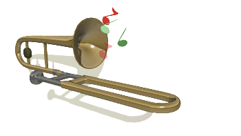

🎺 Sad Trombone Symphony 🎺
Express your disappointment in spectacular fashion!
Click the button when life gives you lemons 🍋... but you wanted oranges 🍊
Need a different scenario?
🎲

💔 Express Sadness 💔
Sadness Intensity:
Mildly Disappointed
0
Times Sad
0
Total Sadness
🔄 Reset Stats